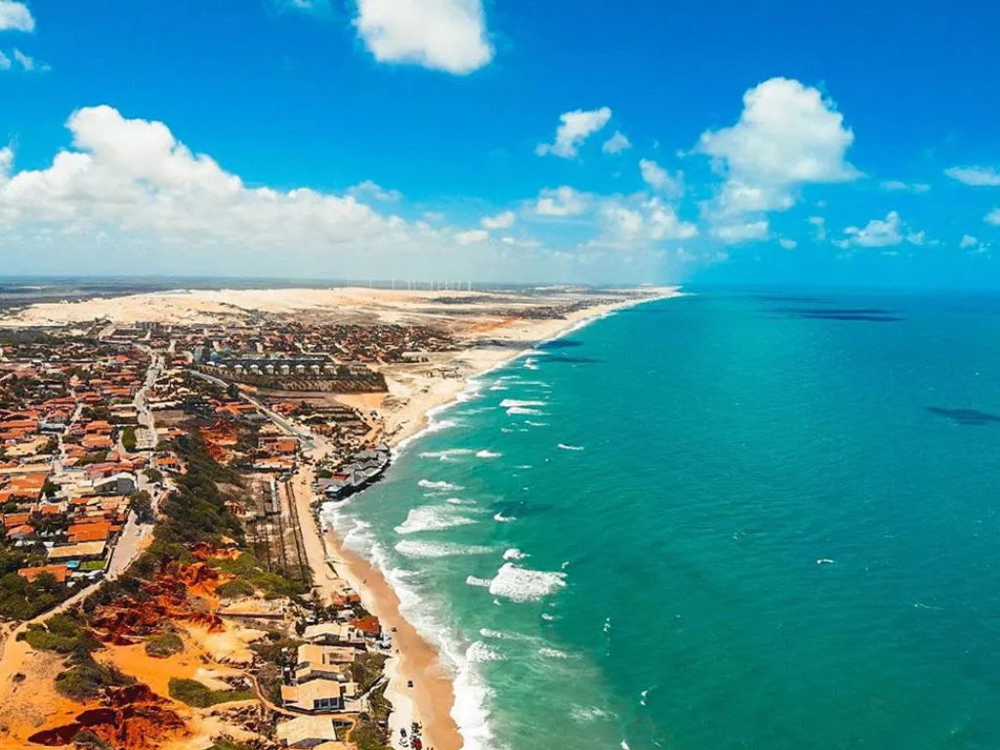

O Ceará é um estado que se destaca no cenário nacional pela combinação de paisagens litorâneas icônicas e uma gestão pública referência em educação e inovação. Conhecido como a "Terra da Luz", por ter sido a primeira província a abolir a escravidão, o estado possui um litoral privilegiado, onde ventos constantes favorecem tanto a prática de esportes náuticos, como o kitesurf, quanto a liderança na produção de energia eólica. Destinos como Jericoacoara e Canoa Quebrada são mundialmente famosos por suas dunas móveis, falésias e lagoas de águas cristalinas, consolidando o turismo como um pilar fundamental da economia cearense.
